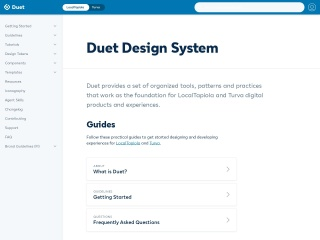

AdeoMozaic Design System

Alaska AirlinesAuro

Ant FinancialAnt Design

Australian Open Source CommunityGOLD Design System

AutomatticWordpress.com design handbook

AWS AmplifyAmplify UI

BenevitySkyline

BuzzFeedSolid Style Guide

City of BostonFleet

CloudflareCF-UI

ContentfulForma 36

DecathlonDesign System - Vitamin

DuolingoDesign guidelines

Financial TimesOrigami

General ElectricPredix Design System

GO-JEKAsphalt

Goldman SachsGoldman Sachs Design System

GoodBarberGoodBarber Design System

GOV.UKGOV.UK Design System

Help ScoutHelp Scout Style Guide

Hewlett PackardGrommet

HubspotCanvas Design System

IBMCarbon Design System

Instructure IncInstructure UI

IntuitDesign system

IntuitQuickBooks Design System

Kontur

LocalTapiolaDuet

LoomLens

Louder Than TenManual

MailChimpMailchimp Content Styleguide

Mantine

MerckLiquid

MicrosoftFluent

MorningstarMorningstar Design System

MozillaProtocol

MYOBFeelix

New York StateNew York State Design System

News UKNewsKit

NordhealthNord Design System

Pega DigitalBolt Design System

Red HatPatternfly Design System

Royal CaninRoyal Canin's Design Language

SAP OpenUI

SeekSeek Style Guide

SemanticSemantic UI

ShopifyPolaris

SpareBank 1SpareBank 1 Designsystem

Sprout SocialSeeds

Stack OverflowStacks

State of New South WalesDigital NSW

ThumbtackThumbprint

TOTVSPortinari UI
Transport for West Midlands

TrelloNachos

U.S. GovernmentU.S. Web Design System

uSwitchuStyle

Vue Design System

Welcome to the JungleWelcome UI

WeWorkRay

WiseDesign system

WonderflowWanda Design System

ZendeskGarden